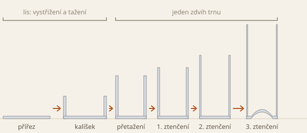
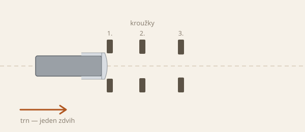

Jak se vyrábí plechovka na nápoje
Tělo plechovky vzniká z jednoho kusu hliníkového plechu, bez svaru. Z plechu se vystřihne kruhový přířez a vytáhne se z něj mělký kalíšek. Trn pak kalíšek protlačí kroužky, které ztenčí stěnu a plechovku prodlouží. Víčko je samostatný díl a nasazuje se až po naplnění.
Od přířezu k plechovce

Kalíšek vzniká v samostatném lisu. Jedním zdvihem se z plechu vystřihne kruhový přířez a vytáhne se z něj široký nízký kalíšek. Přidržovač přitom brání zvlnění okraje.
Ve druhém stroji se kalíšek nasadí na trn. Trn ho jedním zdvihem protáhne nejprve přetahovací matricí, která zmenší průměr na konečný průměr plechovky. Kalíšek se přitom prodlouží, tloušťka stěny se téměř nemění. Potom trn protlačí plechovku třemi kroužky ze slinutého karbidu wolframu, které ztenčují stěnu.

Tažení se ztenčením stěny

Každý další kroužek má o něco menší otvor. Stěna se mezi trnem a kroužkem stlačí a ztenčí. Objem materiálu se nemění, a proto se stěna prodlouží a plechovka roste do výšky. Tento postup se nazývá tažení se ztenčením stěny. V angličtině se mu říká ironing, v provozní hantýrce se proto občas objevuje i „žehlení“.
Přetahovací matrice a všechny tři kroužky jsou za sebou v jedné ose. Trn jimi plechovku protlačí v jednom zdvihu. Nejběžnější sestava je jedna přetahovací matrice a tři kroužky. Kde chybí místo, používají se jen dva kroužky.
Kroužky jsou od sebe tak daleko, že stěna projde celá jedním kroužkem dřív, než dno dojede k dalšímu. Kdyby se kov tvářel ve dvou kroužcích současně, tahové napětí ve stěně by se sečetlo a mohlo by dosáhnout meze pevnosti. Stěna by se utrhla. Ve třetím kroužku se proto stěna ztenčí nejvýš o 40 %.
Dno se při tažení se ztenčením stěny neztenčuje. Na konci zdvihu trn přitlačí plechovku na razník, který vytvaruje dno do kopule. Kopule lépe odolá vnitřnímu tlaku nápoje.
Ve studii z roku 2021 se stěna z plechu tloušťky 0,24 mm ztenčila asi na 0,09 mm.
Materiál
Tělo je ze slitiny hliníku 3004 nebo 3104. Víčko je ze slitiny 5182, která je tužší. Do víčka se vyrazí drážka pro otevření a přinýtuje se k němu otvírák.
Postup výroby
- Odvíjení a mazáníPlech se odvíjí ze svitku a nanese se na něj mazivo.
- KalíšekLis jedním zdvihem vystřihne kruhový přířez a vytáhne z něj široký nízký kalíšek.
- Přetažení a ztenčení stěnyTrn jedním zdvihem protáhne kalíšek přetahovací matricí na konečný průměr a potom třemi kroužky, které ztenčí stěnu. Na konci zdvihu se vytvaruje dno. Při zpětném zdvihu stěrač stáhne plechovku z trnu.
- Ostřižení okrajeHorní okraj se ostřihne na přesnou výšku. Odstřižky se recyklují.
- Mytí, potisk a lakováníPlechovka se umyje od maziva, zvenku se potiskne a lakuje, uvnitř se nastříká ochranný lak. Laky se vypálí v peci.
- Zúžení hrdlaHorní část se v několika krocích zúží a okraj se ohne do příruby pro víčko.
- KontrolaZkoušečka se světlem vyřadí plechovky s dírkami nebo trhlinami.
- Naplnění a víčkoPlechovka se naplní. Dvojitý lem spojí přírubu plechovky s okrajem víčka ve dvou krocích do těsného spoje.
Souvislosti s kapitolami
Zdroje
- P. Wędrychowicz a kol.: A Flow Stress Model of the AA3104-H19 Alloy…, Materials 14 (2021) — tažení kalíšku v lisu, přetažení a tři stupně ztenčení v jednom zdvihu, tvarování dna, tloušťky 0,24 a 0,09 mm, fotografie polotovarů.
- Mundolatas: Bodyformer tool pack configurations — sestava přetahovací matrice a tří kroužků, tváření vždy jen v jednom kroužku, nejvýš 40 % ve třetím kroužku.
- Patent US 4262512: Drawing and ironing assembly for bodymaker — přetažení a průchod kroužky v jednom pohybu trnu, stěrač při zpětném zdvihu.
- Toyo Seikan: DI can making process — postup výroby, tři stupně ztenčení stěny, tloušťka stěny až 0,1 mm.
- AL Circle: A step-by-step guide to aluminium can manufacturing process — slitiny, tloušťka plechu, kopule ve dně, víčko a dvojitý lem.
- The Can Museum: The two-piece drink can — kroužky z karbidu wolframu, zúžení hrdla, kontrola světlem.